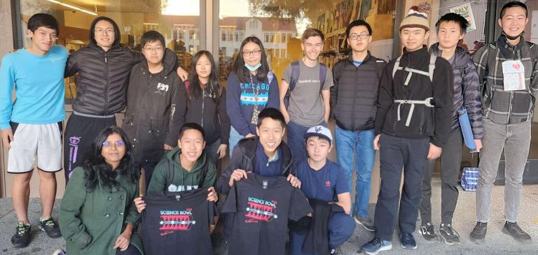

PALY SCIENCE BOWL
The official website of the Palo Alto High School Science Bowl team.
ABOUT US
We are Gunn Science Bowl, a school club dedicated to spreading curiosity for STEM and catalyzing exploration. Annually, we compete in the National Science Bowl®, a nationwide competition hosted by the U.S. Department of Energy. We seek to create a community of intelligent, driven individuals in the pursuit of knowledge, and while we strive for excellence, we also promote an environment of teamwork, ingenuity, and creativity.
Although our primary focus is preparing our team for regionals, anybody is welcome to come to our meetings and learn more about STEM. We meet every Wednesday at lunch in J-05—feel free to drop by!